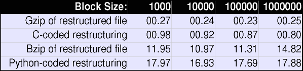

xml2struct Processing for Embedded ApplicationsDavid Mertz, Ph.D.
Gnosis Software, Inc.
November 2001
This paper continues its author's research into compression of XML documents. The special structures in XML tend to allow certain improvements over the most naive compression techniques--some lossless document restructuring techniques can serve to improve compression ratios. For a certain class of applications block-level algorithms are preferable to document-level algorithms. This paper explores memory and time optimization of the block-level version of thexml2structalgorithm, and discusses its utility within dedicated transmission channels. Code exploring these techniques is provided in the paper, along with representative quantitative results.
XML documents, as is well known, tend to be quite large compared to other forms of data representation. Of course, in balance to this, the simplicity and generality of XML makes it worthwhile, despite its verboseness. Much of the time, in fact, the size of XML really makes no difference--DASD is cheap, and the time on the wire might be only a small part of the total time in the process. But at other times, bandwidth and storage space can be important.
To quantify matters, it is not at all unusual for XML documents that represent table-oriented data to be three times as large as a CSV or database representation, or even than a flat file. A similar increase is typical in representing EDI data (such as for ebXML projects). In many of these context, one starts out with multi-megabyte data sources, and making them multiple times larger can be inconvenient, especially for transmission purposes. For example, for purposes of my research, I created an XML representation of an approximately 1 megabyte Apache access logfile. This created an XML document 3.18 times the size of the underlying line-oriented log. The only information added in the process was some descriptive names for fields that could have also been specified in a single header line of less than a hundred bytes. Moreover, my specific XML representation did not include any namespaces in the tags, which would have increased the size further.
This paper follows two earlier papers I wrote concerning XML compression,
and specifically, the utility xml2struct that has been
refined as my research progresses. An installment of a column
I write for IBM developerWorks, "
XML Matters #13: XML and Compression," introduced a strategy for
losslessly "restructuring" XML documents to make subsequent compression
with standard compression tools more facile. In brief characterization,
the conclusion of that first paper, "XML and Compression," was that
application of the xml2struct transformation prior
to application of gzip significantly decreased the
size of the resultant compressed file; application of xml2struct
only sometimes, and to a smaller extent, improved the compression of
bzip2 .
The utility xml2struct was developed independently of an
earlier similar application called XMill. While using different
specific formats, the general strategy of grouping similar element contents
together in the transformation output is common between the formats.
One limitation of XMill was shared by the first version of
xml2struct ; that is, both of them operate on entire
XML files. In several plausible scenarios, this file-level operation
is undesirable. One situation is that where the XML documents being
transformed are many megabytes (or even gigabytes) in size. In such
cases, application of transformation/compression will use memory and
diskspace proportionate with the size of the XML source; moreover, insofar
as transforming a large XML document takes time, the transformation can
introduce large latencies while a dependent process awaits the result.
A second situation is where the XML documents are not themselves necessarily
huge, but they still arrive over a comparatively slow channel. A
router that wants to forward compressed versions of XML packets is an example
of this situation. Rather than requiring a consuming process to wait
for the arrival of a complete document stream, it can be desirable to read
only a block worth of the XML document, then apply the transformation/compression
to that single block.
In the Intel Developer Services white paper, "
Compression and Streaming of XML Documents," I examined a modification
of the xml2struct algorithm that operates at block-level
instead of file-level. The procedure there is to flush to an
output stream transformed XML document fragments whenever a block size
is reached in an input stream. Whatever general purpose compression
is wanted can be applied to each individual transformed block. The
modified utility can treat each block sized document fragement,
essentially, as a small XML document in itself. Memory usage is
kept in check with this modification; and block N can be processed immediately,
even if block N+1 is not yet available (perhaps because of channel latencies;
but also possibly because the XML document is itself generated by some
slow process).
In "Compression and Streaming of XML Documents," the focus of analysis
was the interaction between block size and compressed sizes of document
streams. Several competing compression strategies were considered.
One baseline strategy is to divide an input stream into blocks
(out of the considerations mentioned above), but apply standard compression
algorithms to each block . This baseline tests whether restructuring
remains effective when using a block-level strategy. A second baseline
is the compression that is obtainable with file-level compression--the
effectiveness of block-level compression strategies must still be judged
against the most effective compression techniques (even if those most effective
file-level techniques are impractical for specific applications). The
paper found, in brief, that restructuring with xml2struct
improves compression significantly across block sizes. I also found,
however, that compression is much less for 1k blocks than for larger sizes;
it becomes significant for 10k blocks; and only becomes closely comparable
to file-level strategies for 100k blocks. Moreover, I found that
bzip2 , which compresses remarkably well in file-level or large block-size
compression, handles small block sizes extremely poorly.
My earlier research used programming code written in Python--which is
a high-level bytecode-compiled language, with considerable runtime
dynamism. Moreover, no focus was placed on the running time of
the restructuring process, even within the inherent speed constraints
of the Python language. In other words, the previous papers looked
only at "how small?"; they ignored the question "how fast?" This
paper provides a new highly-optimized ANSI C implementation of
xml2struct for the purpose of examining the feasability of using
the utility in a context where bandwidth saturation of an output channel
is important. In a router, for example, one cannot consider a compression
technique--no matter how otherwise effective--that requires throttling
output speed to the limit imposed by a slow compression process.
When I wrote my earlier papers, I was not aware of the fascinating research
efforts of James Cheney of Cornell University, which he discusses in
"
Compressing XML with Multiplexed Hierarachical PPM Models." Cheney
uses several variations on Prediction by Partial Match (PPM) compression.
The "multiplexing" in Cheney's title refers to "injecting" multiple
contexts into PPM models (the specific algorithms variants are called
MM, MHM and MHM*) . This
is complicated, and readers should refer to Cheney's paper for detail.
The bottom line for Cheney's technique is that it is able to achieve
substantially better compression of XML documents than is xml2struct
, XMill, or bzip2, even where those techniques operate
at file-level.
Moreover, Cheney also observes that, "ESAX, unlike XMILL [note: but
like xml2struct] , can be encoded and decoded online,
so that the XML data can be processed incrementally." ESAX is
the restructuring transformation that underlies the MHM algorithms. However,
as far as I can determine, once PPM techniques are applied, MHM can not
operated at a block-level. And it should also be noted that ESAX
streaming lacks some of the validity properties of xml2struct
(see below).
The real drawback of MHM variants, however, is speed. While the
compression capabilities are nothing short of amazing, the running
times are anywhere from 6 to 40 times slower than bzip2
. And much of our discussion below points to the fact that
bzip2 is itself far too slow for consideration in the embedded
contexts discussed. So MHM, overall, is at least two orders
of magnitude worse than xml2struct in speed terms.
The source code, and a statically-linked Linux executable, for
xml2struct can be downloaded (see Resources). The
pattern of the source code follows the Python version fairly closely;
expat was used as a parsing library because of its
reputation for speed (SAX is used in the Python version--although it wraps
expat anyway--but the callback structure and function
names are kept the same). Plain ANSI C is used to avoid any memory
and speed overhead associated with C++. The goal in this implementation
is to be as fast as possible, while simultaneously remaining light on
memory usage.
All the details cited below were measured on a Linux (2.2 kernel) system running on a PIII-733 with 256Mb of PC-133 RAM. Some testing was also done on a range of IA systems, from a Pentium-233 to a P4-1.5Ghz. Performance seems to vary pretty much as would be expected by the relative ratings on standard benchmarks. Porting to "exotic" architectures like embedded chip designs might show some differences, but the general patterns are sufficiently clear that such details are not crucial.
As a start, xml2struct requires the expat
library, either as a system library or statically linked in. With
symbols stripped , the xml2struct executable is about 11
kilobytes in size. But libexpat.so is just under 300kb.
It might be possible to reduce the functionality of expat
to only include the functions actually used by xml2struct
(in a statically linked version, presumably), but I have not examined
that in detail. A bit over 300 kilobytes is not much by the standards
of desktop, but could be significant in embedded contexts.
Some arrays of data structures allocated in advance to length MAXTAGS (253 by default; see the previous papers for an explanation of this limitation) use another 4kb, or so. In addition, a default 8kb READBUFF is used when reading an input XML streams. A handful of global variables are used, but these are each of types that occupy just a few bytes.
Except for the memory usage described above, memory usage is strictly
dependent on the block size. A typedef'd structure called 'Stringfifo'
is used to hold element body contents during processing. An
array of pointers to unallocated char pointers (i.e. strings) is used to
hold the contents of each tag type. As well, each string is preallocated
to blocksize/numtags to avoid extra malloc()
's and especially realloc()'s. The worst-case for
this strategy is where every tagname is short (since the tags themselves
do not go into the Stringfifo), and every element type has one character
of content, except the one element type that contains the remainder of
the content. In the worst-case, the Stringfifo structures use approximately
twice blocksize of memory. Block output is buffered
to a character string before it is written to STDOUT; and this string is
also currently set to an excessively cautious twice blocksize
(in actual fact, the needed allocation is usually less than
blocksize , but occassionally it is slightly greater than
blocksize --the exact needed allocation will probably be added
to a later version of the utility). In principle, the output buffer
is not needed at all--but its existence potentially allows multiple buffered
blocks to be held pending the availability of an output channel (it also
allows a developer to change where the output goes in one write_string()
function). So currently, dynamic memory usage is (at worst) 4
times blocksize ; however it could be cut in half by eliminating
the buffer. For 1kb blocks, this size is hardly interesting; for
megabyte blocks it could be important.
For purposes of this testing, block compression was not performed within
the xml2struct utility itself. This allows us to
look at isolated timings for the restructuring itself, and for a separate
compression pass. Admittedly, a single compression pass on a block-restructured
stream will generally be somewhat faster than separate compressions of
each block. But given the general lay of running times below, this
difference is rather evidently unimportant.
Several comments can be made about a separate compression pass. There
is no deep relation between the restructuring pass and the compression
pass. In situations where specific block sizes are important, compression
may be applied to each block within the same xml2struct
process (with a reduction in compression effectiveness). But in
some cases, it may make better sense to keep the compression step separate.
In an embedded/hardware usage, dedicated compression chips might
be available to operate on the intermediate stream. But even assuming
a single physical processor, a streamable compression algorithm can keep
a symbol table in memory between compression of successive blocks. Of
course, the downside of such streaming is that loss of a block during transmission
causes loss of the symbol table by the decompressor. With block-level
compression (whether or not it is part of the actual xml2struct
process) , each block can be decompressed and restored independently.
As a note, gzip /zlib is streamable;
bzip2 is not.
Let us look at the results of several strategies, then make some comments.
Block sizes of 1k, 10k, 100k, and 1M were used, as in the earlier
papers. The source XML document was the weblog.xml file
discussed in the prior white paper:
This chart is fairly uninteresting looking; the small differences that exist might be better examined with the actual numbers:
Clearly, block-level compression (i.e. no symbol table maintained between
blocks) suffers for very small block sizes--i.e. 1000 bytes. We saw
in the prior white paper that bzip2 fares even worse under
this contraint than does gzip. It is noteworthy as well
that compression improves as block size increases, even where the compression
operates on the entire block-restructured file/stream. On all but
the smallest block sizes, a block-restructured XML file is morecompressible
than the original XML; this effect is stronger with gzip than
with bzip2 . Of minor interest is the fact that block-level
restructuring plus file-level bzip2 can best simple
bzip2 applied to the original XML, even though the prior paper
showed that block-level bzip2 was not as effective even for
1M blocks. But the size differences in question are small, in any
case.
The compression size results were covered in greater detail in the prior
white papers. Of primary interest in this paper is the speed at which
restructuring and compression can be performed. If one imagines a
use of these procedures as a channel intermediary, the ability of the process
to saturate its output channel is of crucial importance. The times presented
here were gathered using the Linux time utility. What
is reported is actual elapsed time of runs, but each run showed close to
100% CPU usage, and was predominantly user time. In a few cases where
the times mildly surprised me (for example, bzip2 time getting
worse at larger block sizes), repeated runs were performed for verification.
All the timings seem consistent between runs, within a range of random-seeming
variations. In any case, one overall moral is clearly that block
size makes very little difference to the running times of any of the examined
transformations. The timing was performed on a machinewith enough memory
that all the files in question were in the disk cache when the tests were
run (so memory bandwidth might make some difference, but disk speed did
not).

The general timing pattern is pretty clear. Restructuring (in the
C implementation) is quite fast; gzip is even faster (although
if it were performed at a block-level it would slow down somewhat;
bzip2 is slow. I also included the running time of the
original Python implementation as a baseline. As indicated earlier,
the Python version is completely non-optimized--actually, I am surprised
that it is not even slower in comparison to the C implementation. With
some refactoring, the running time of a Python implementation could probably
be cut in half. However, the quick summary of both the Python implementation
and a bzip2 pass would still be that they are too slow
for embedded purposes (and the Python version uses much more memory also,
for several reasons--as does bzip2, for different reasons).
What do these running times mean for output channel saturation? A three
megabyte file can be restructured in slightly under a second on a PIII-733,
with block size making only a small difference to the speed of restructuring.
Compressing the restructured file with gzip/zlib
adds another quarter second to the process time. This works
out to approximately 20 megabits/sec; in other words, a PIII-733 performing
xml2struct+gzip can saturate two 10 megabit
ethernet channels, or about 13 T1 lines. A Pentium-233 that I tested
on performs about 6 times more slowly, which is still twice the requirement
for saturating a T1 line. A slow Pentium, or perhaps even a fast 80486--or
similarly performing chip within a different architecture family--if dedicated
to the xml2struct process, should suffice to fill a T1 line
(which is dedicated to transmitting XML documents efficiently). Going
in the other direction, a Intel P4 or AMD Athlon running at clock speeds
over a Gigahertz, should be able to satisfy the requirements of a 45 megabit
T3 line. Brief and informal testing on a P4-1.5Ghz system put performance
in the right range to saturate a T3. Multiprocessor systems should
be able to handle even higher bandwidth requirements, such as 100 megabit
ethernet.
The timings presented are still at a fairly general and approximate level.
Anyone wishing to implement xml2struct in an actual embedded
middleware system will need to perform more precise engineering specifications,
and perform more extensive testing across a range of XML documents. But
at a general scale, current generation--or even several generations old--chips
have adequate processing power to saturate communications channel architectures
currently in use.
Blocks in the xml2struct format--whether post-compressed
or not--retains a property that I would call cladistic validity
. In contrast, streamed protocols like ESAX (used in MHM), or
simple sized-threshhold chunking (such as with block compression) do not
retain this desirable property. In biology, cladistics is the study
of phylogenetic relationships--in other words, of evolutionary family trees.
XML documents, by topological analogy, also form hierarchical trees.
The validity of XML documents is determined by their conformance with
the rules in a DTD or other Schema; such a Schema specifies a number of
structural requirements for valid documents, both what elements must exist
within a document, and what container relationships are allowed to hold
among elements. A block in the xml2struct format maintains all
the "family relationships" in the XML that underlies the block, both ancestral
and descendent. A block cannot necessarily contain all the parts necessary
to satisfy validity according to its DTD, but it does both contain
a list of every ascending parent element, and preserve the structure of
contained elements.
An example would help here. Suppose that a particular DTD governs
the markup of books. The top element is <book>
, and this contains a <TOC>, a <preface>
, and <introduction>, several <chapter>
's, and <endmatter>. <chapter>
's, in turn contain <section>'s; <section>
's contain <subsection>'s; and <subsection>
's contain <topic>'s. A real DTD would have
additional markup elements. An xml2struct block from
the middle of a restructured document might contain the following (tag
abbreviations here expanded from their one byte representation for readability):
|
prior_state:
|
book :: chapter :: section :: subsection |
|
docstruct:
|
topic :: content :: / :: / |
Based on this block alone, we have no idea what the preface element
might contain. But we do know that the topic contained
in this block is itself be contained in a subsection. Since
two "close tag" abbreviations occur in the docstruct, we also
know that this block completes the enclosing subsection. Moreover,
we are provided information that the subsection is contained inside
a section, the section in a chapter, and the chapter
in a book. All of this is required by the validity constraints
of our example, but not every DTD specifies a unique possible
context (for example, topic's might also occur in preface's).
Moreover, by explicitly encoding the hierarchical context, an additional
check against corruption is provided.
For a variety of "data oriented" XML formats--or more specifically,
for interprocess communications--being able to recover cladistically valid
document fragments is useful, even if surrounding blocks are unavailable
(due to corruption during transmission, or for other reasons). By imposing
the constraint of cladistic validity isolated restructured (and compressed)
blocks can--for many purposes--contain meaningful and useful collections
of data.
Multiple channels of XML input streams can be multiplexed with nearly
zero additional processor and memory requirements. xml2struct
restructuring is almost stateless: all that is needed to maintain
the state of a stream's restructuring is its prior_state stack.
This stack is of size MAXDEPTH, which is currently defined
as 64 (bytes), plus room for two int's within the stack structure.
Of course, some sort of flag will usually be attached to each transmitted
block to indicate which stream it belongs to--a small number of bytes might
need to be devoted to a "stream name" table. Multiplexing is not implemented
currently, but the framework is straightforwardly available.
The scenario where channel multiplexing is useful is a situation where
multiple XML streams arrive at an encoding computer (or router, etc). Each
stream arrives at a limited rate, either because of channel bandwidth or
because of limits in the encoding process (e.g. the data is generated by
real-world events such as an equipment monitor). The encoding computer
can buffer each input stream until blocksize has accumulted
in a given buffer, then restructure, compress and transmit the transformed
version of that XML stream. During the transformation process, another
buffer may have reached its buffer threshhold, and the encoding computer
can turn its attention to that stream. All that needs to be saved and
reloaded for a "stream state" is the 72 bytes or so of prior_state
stack. The CPU in the encoding machine only needs to focus on one
block restructuring at any given time, so encoding speed remains constant.
A related note cannot be fully explored here, but is worth observing.
A developer might be inclined to restructure multiple XML streams
by using a threading or fork() strategy. Doing this would
be a mistake. An asynchronous socket handler within a single process
saves thread overhead, and avoids the need for context switches (other than
loading 72 bytes, or moving a pointer to the right 72 bytes).
select() can juggle communications channels, or a higher level wrapper
like Python's asyncore.py can be used to ease the programming.
The structure of documents significantly affects their compressibility
with standard compression algorithms. Since XML encodes much
detail of its semantic structure in its syntactic form, a "restructuring"
of such documents can improve their compressibility. A previous
paper showed that such restructuring techniques are amenable to serialization
using parsed blocks from large XML documents. This paper demonstrated
that the xml2struct algorithm can be implemented in optimized
C with peformance characteristics that allow it to saturate relevant output
channels, using current generation CPUs and currently common channel bandwidths.
The source code archive for xml2struct can be found at:
http://gnosis.cx/download/xml2struct.zip
My previous Intel Developer Services' white paper on adapting
xml2struct to block-level structuring can be found at:
Compression and Streaming of XML Documents
The writeup of my first round of research addresses document restructuring in a general way, without yet considering serialization issues. A number of quantitative comparisons are contained therein that provide useful background. The earlier article appears on IBM developerWorks (use its search facility). An archival copy can be found at:
http://www-106.ibm.com/developerworks/xml/library/x-matters13.html
The XMill XML compressor addresses XML document restructuring in a manner similar to that I have. Information and a downloadable version can be found at the below link. The license requires a click-through, and the download page unfortunately seems to have a buggy script that does not allow downloads from all sites.
http://www.research.att.com/sw/tools/xmill/
Very good (and very slow) compression of XML documents is provided
by the utility xmlppm. A discussion by its creator
is contained at:
Compressing XML with Multiplexed Hierarachical PPM Models ."
I wrote what I believe is a good general introduction to data compression. It can be found at:
http://www.gnosis.cx/publish/programming/compression_primer.html